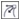
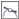

ыстрые ссылки на процедуры, описанные на этой странице:
• |
• |
В результате изменения типа узла изменяется поведение прикрепленных к нему сегментов. После выбора нового типа узла форма узла может измениться не сразу, а лишь после перемещения управляющих точек для изменения пути.
Путем изменения формы узла можно преобразовать сегмент линии в сегмент кривой и наоборот. Для преобразования сегмента линии в сегмент кривой необходимо выбрать узлы на обоих концах сегмента для отображения управляющих точек кривой.
Существует три типа узлов кривой: сглаженный, симметрический и резкий. При выборе симметрических узлов кривая, расположенная по одну сторону от узла, повторяет форму кривой, расположенной по другую сторону от узла. Резкие узлы создают резкие изгибы пути. Сглаженные узлы создают плавный переход между двумя сегментами.
Типы узлов слева направо: симметрический, резкий и сглаженный
| Преобразование сегмента пути в кривую или линию |
1. |
В наборе инструментов выберите инструмент Путь |
2. |
Нажмите кнопку Фигура на панели свойств.
|
3. |
Выберите один или несколько узлов на сегменте пути.
|
4. |
Нажмите одну из следующих кнопок на панели свойств.
|
• |
В линию
|
• |
В кривую
|
Сегмент пути можно преобразовать в кривую или в линию, щелкнув
его и нажав кнопку В линию или В кривую на панели свойств.
|
| Изменение типа кривой для узла пути |
1. |
В наборе инструментов выберите инструмент Путь |
2. |
Нажмите кнопку Фигура на панели свойств.
|
3. |
Выберите узел.
|
4. |
Нажмите одну из следующих кнопок на панели свойств.
|
• |
Симметрическая кривая
|
• |
Резкая кривая 
|
• |
Сглаженная кривая 
|
Если сегмент кривой соединен с сегментом линии сглаженным
узлом, можно переместить только управляющую точку на стороне
кривой по воображаемой линии, повторяющей расширение сегмента
линии.
|
Узел кривой, соединенный с сегментом линии, должен быть
сглаженным или резким.
|
Copyright 2012 Corel Corporation. Все права защищены.